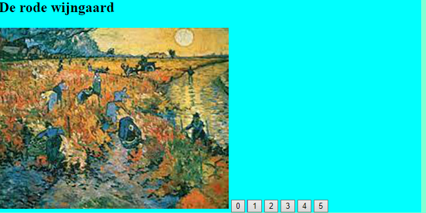

Periode 2 JavaScript
Dit is mij portfolio van alle opdrachten in de 2 de periode van JavaScript.
gemaakt is door Jari Kee.
Opdracht 1
: De bedoeling van de opdracht is als je op een element kliktede kleur daar van veranderd.
Opdracht 2:
De bedoeling van de opdracht is als je op een product klikt het product in de juiste box gaat.

Opdracht 3:
De bedoeling van de opdracht is als je op 1 t/m 5 klikt een andere foto/titel tevoorschijn komt.
 Opdracht 4:
De bedoeling van de opdracht is dat met elk seizoen de foto, titel en achtergrondkleur veranderd.
Opdracht 5:
De bedoeling van de opdracht is dat je een andere foto te zien krijg met de nummers van 1 t/m 10.
Opdracht 6:
deze opdracht is het elfde als opdracht 5 maar dan kan je kiezzen tussen: Noord, Oost, Zuid en West.
Opdracht 4:
De bedoeling van de opdracht is dat met elk seizoen de foto, titel en achtergrondkleur veranderd.
Opdracht 5:
De bedoeling van de opdracht is dat je een andere foto te zien krijg met de nummers van 1 t/m 10.
Opdracht 6:
deze opdracht is het elfde als opdracht 5 maar dan kan je kiezzen tussen: Noord, Oost, Zuid en West.